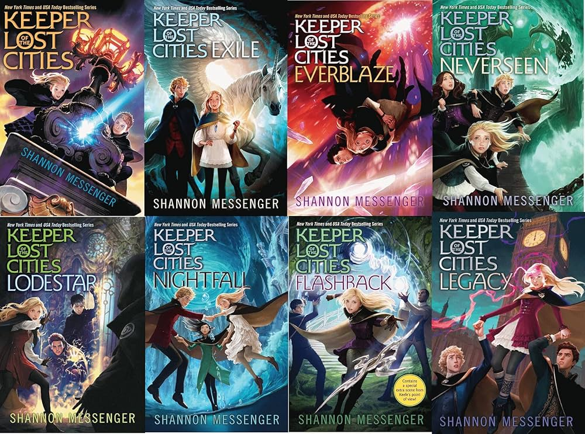
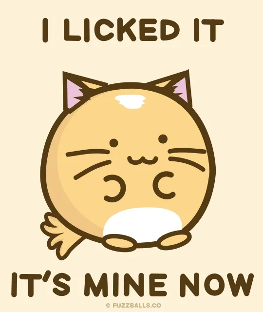

My name is Mary Victoria Requillmanim. I am 11 years old. My birthday is on June 20 and I live in the Philippines, located in South East Asia. I also like to be called Ria. It's my nickname. Please call me that. Anyway, I go to school at Saced Heart Hijas de Jesus, which is a Chinese school and was founded by Saint Candida Maria de Jesus. I'll be Grade 7 next year. Two of my hobbies are reading and baking. My favourite authors are Rick Riordan and Shannon Messenger. I have a twin brother called Tyler, and a little sister named Clawdine. We like to play and swim. A random fact: when I was making this I decided to prank my teacher. When I spelled spelled me name I put Requillmanim for my last name when it's actually Requilman. And she thought it was true. And she also thought we were foreigners. I never corrected her. And she still beleives it. I don't think I'm goig to tell her this, though. But, Trainer Mylene, if you're reading this, my last name isn't Requillmanim, it's Requilman. Sorry!
The hobby I enjoy the most is reading. I first started to like reading books when I was Grade 4. The first book series I liked to read was Geronimo Stilton by Elisabetta Dami. The series that I like most are PercyJackson by Rick Riordan and Keepers of the Lost Cities, by Shannon Messenger. My favourite sweets to bake and eat are brownies, cookies, and cupcakes.
Picture of my favourite movie

Poster of my favourite Avenger and movie

Picture of my fav series, also my favourite book series

Picture of my favourite pizza
A Google photo of a steak
My favourite book series I didn't finish yet
| Category | Details | Fun Facts |
|---|---|---|
| Hobbies | Swimming, Baking, Drawing, Reading, Gaming | They are all productive except gaming and that's reading and gaming are only hobbies me and my brother share |
| Favorite Movies and series | Cellular, IronMan, PercyJackson and the Lightning Thief | A FunFact is that only PercyJackson is based on mythology and Cellular and IronMan is focused on technology |
| Favorite Foods | Sizzling Steak, Fried Chicken, Lechon, Pizzas, Burgers | Whenever I go home from school I MUST have a burger waiting, and no matter where we are I'll order pizza and steak(evem though I'm usually dissapointed and no the steak IS NOT rare AT ALL. I ask for perfectly and thoroughly cooked)  |
| My Best Friends | Anica, Audrey | A FunFact is that since they're names start with "A" and mine starts with "R", my classmates call us, when we're together, the AARs. |
| My Dreams/Plans for the Future | Artist, Architect, Designer | They all include writing and drawing |
| Category | Details | Fun Facts | Future |
|---|---|---|---|
| Favorite Topics | Science, Social Studies/History, CLF, H.E, Reading, Language | I only like H.E because of my teacher. | |
| Extracurricular Activities | Volleyball, Soccer | My dream sport is Gymnastics but I'm scared and didn't try it yet. Cartwheels sound dizzying and I'm fairly sure I'm not strong enough to do a handstand | |
| Achievements | One of the top 5 Math video winners last year, 2nd Place in MushroomBall in Intramurals, 4th Place in Table Tennis/Ping Pong | I never won a first in an important sport this year. Sad. | |
| Future Plans | My plan is to become rich and live in a comfortable air-conditioned house with a nice view. And nearby houses for my parents too. And keep a close relationhip with the rest of my family. | I do not care where exactly my house is as long as it's not too far from the city or a hospital, and is quiet, comfortable, and beautiful. |
Champagne Problems is a song that, in my opinion, is relly wonderful.
The series was definitley one of the best things I've ever watched.
The song is really nice and is one of my favs. One lyric I like the most is "If 'Iloveyou' was a promise, would you break it if you're honest?". It hits hard.